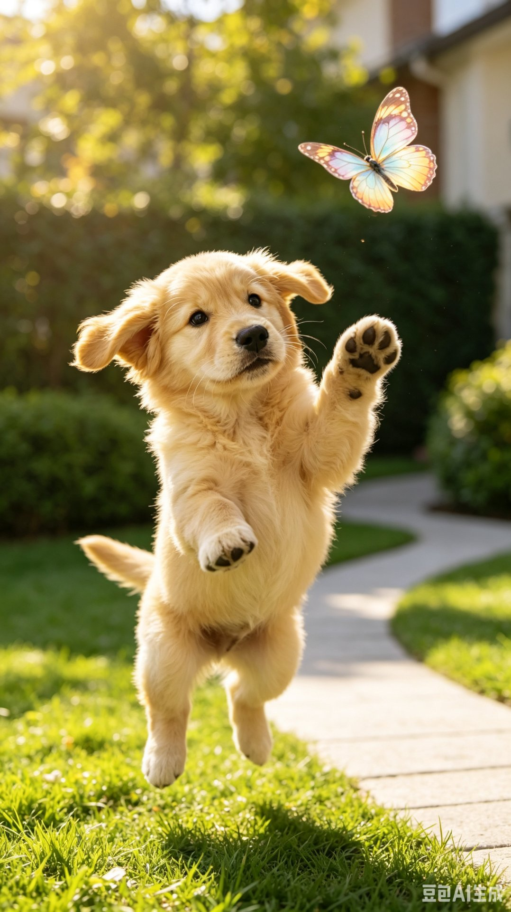
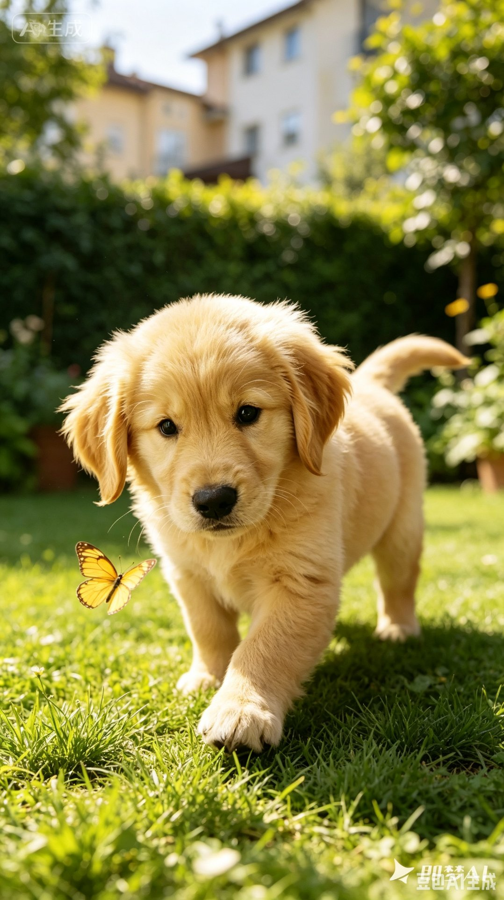
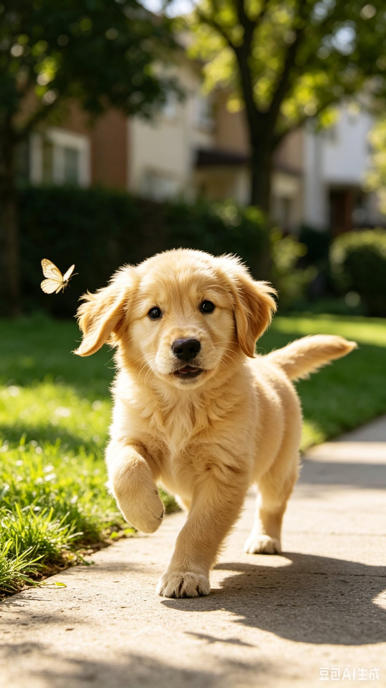
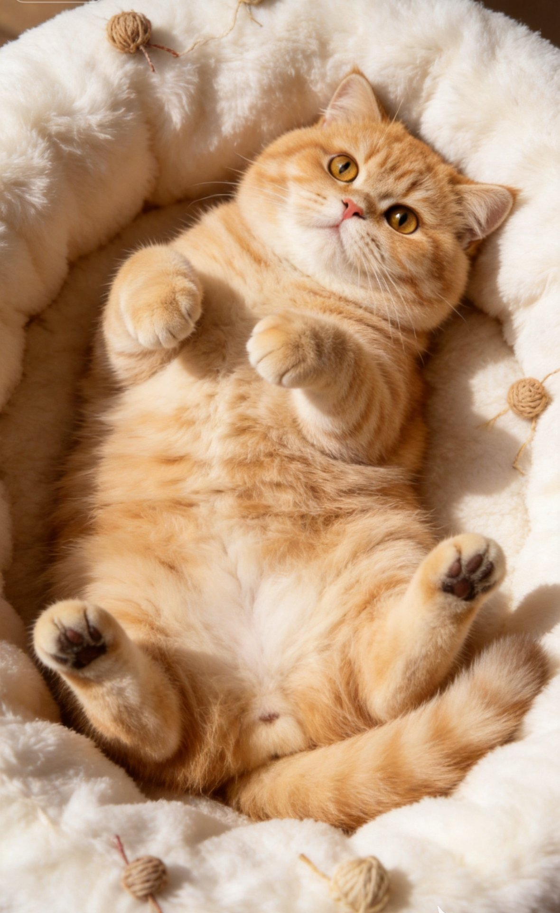
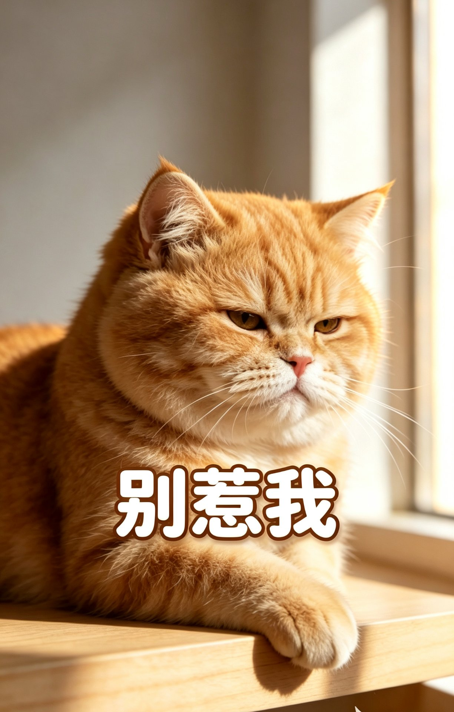

推荐
关注
全部
拆家日记
卖萌日常
出门遛弯
美食时刻

布丁 · 金毛
本汪今天正式向全小区的蝴蝶宣战！一口气追了15只，虽然一只都没抓到，但气势上已经赢了。铲屎官在后面追着跑，笑死，跑不过本汪的~



128
32
分享

年糕 · 橘猫
哼，铲屎官又给我买了新窝。你以为换个软垫子本喵就会原谅你昨天忘记加餐的事吗？……好吧，躺一下试试。也不是不行。就躺五分钟。


86
18
分享

咪咪 · 布偶猫
午后的阳光透过纱帘洒在地板上，形成一条金色的路。我沿着光走，每一步都踩在温暖里……
56
9
分享
社区页面 · 推荐Feed流
选择宠物
（已选咪咪）
咪咪
布偶猫
年糕
橘猫
添加
新宠物
描述Ta今天的行为
（越详细越好）
比如：今天把拖鞋藏到了沙发底下，然后假装什么都没发生。被发现了还一脸无辜地眨眼睛……
42/500
上传照片
（可选，最多9张）


日记风格
（AI将以此风格生成）
AI 生成日记
预计生成时间约 5 秒，生成后可重新换风格
创作页面 · 输入与生成
互动通知
私信
系统通知
宠物提醒
咪咪提醒你
喵～今天还没有帮我写日记哦！本喵今天在窗台看了半小时小鸟，快来记录一下吧～
10分钟前
去写日记
点赞
布丁·金毛
赞了你的日记「今日份拆家述职报告」
1小时前
3
年糕·橘猫
赞了你的日记「午睡的艺术」
评论
布丁·金毛
回复：哈哈哈太真实了！我家铲屎官也是这样追着我跑的
2小时前
1
系统通知
毛崽日记官方
你的日记「窗外的鸟是我的梦想」被选入社区精选！
消息页面 · 互动与通知
咪咪的铲屎官
养了两只猫主子，日常被使唤 🐾
编辑资料
128
关注
2,346
粉丝
8,921
获赞
我的宠物
管理 →
咪咪
布偶猫 · 2岁
年糕
橘猫 · 3岁
我的页面 · 个人中心